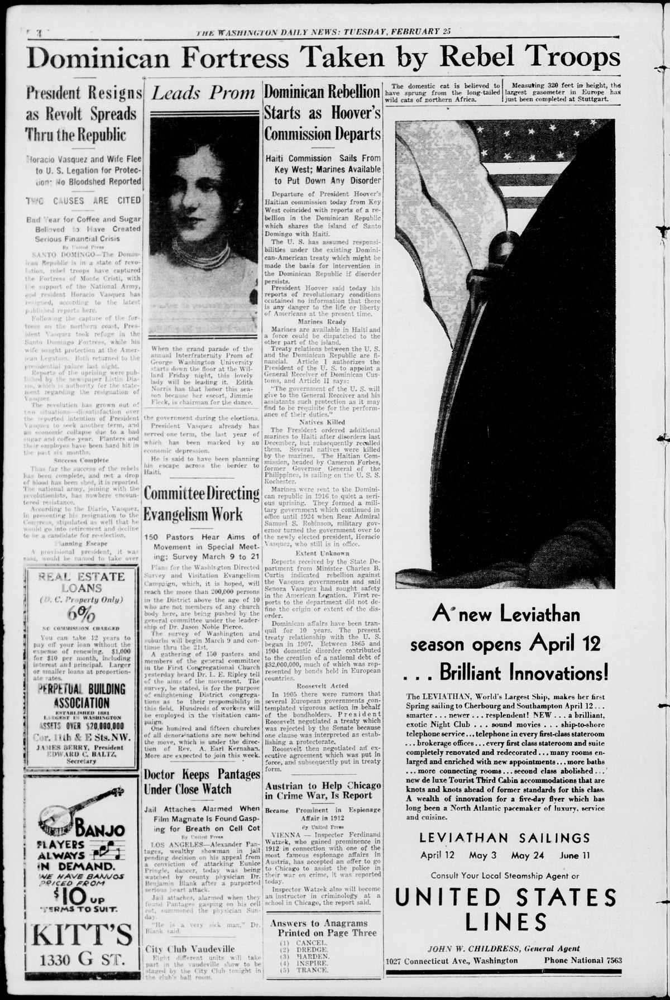

DOMINICAN REBELLION STARTS AS HOOVER COMMISSION DEPARTS
https://www.loc.gov/resource/sn82016181/1930-02-25/ed-1/?sp=4

See the original pageVer la página original
Haiti Commission Sails From Key West; Marines Available to Put Down Any Disorder
Departure of President Hoover's Haitian commission today from Key West coincided with reports of a rebellion in the Dominican Republic which shares the island of Santo Domingo with Haiti.
The U. S. has assumed responsibilities under the existing Dominican-American treaty which might be made the basis for intervention in the Dominican Republic if disorder persists.
President Hoover said today his reports of revolutionary conditions contained no information that there is any danger to the life or liberty of Americans at the present time.
Marines Ready
Marines are available in Haiti and a force could be dispatched to the other part of the island.
Treaty relations between the U. S. and the Dominican Republic are financial. Article I authorizes the President of the U. S. to appoint a General Receiver of Dominican Customs, and Article II says:
“The government of the U. S. will give to the General Receiver and his assistants such protection as it may find to be requisite for the performance of their duties.”
Natives Killed
The President ordered additional marines to Haiti after disorders last December, but subsequently recalled them. Several natives were killed by the marines. The Haitian Commission, headed by Cameron Forbes, former Governor General of the Philippines, is sailing on the U. S. S. Rochester.
Marines were sent to the Dominican republic in 1916 to quiet a serious uprising. They formed a military government which continued in office until 1924 when Rear Admiral Samuel S. Robinson, military governor turned the government over to the newly elected president, Horacio Vasquez, who still is in office.
Extent Unknown
Reports received by the State Department from Minister Charles B. Curtis indicated rebellion against the Vasquez governments and said Senora Vasquez had sought safety in the American Legation. First reports to the department did not define the origin or extent of the disorder.
Dominican affairs have been tranquil for 10 years. The present treaty relationship with the U. S. began in 1907. Between 1865 and 1904 domestic disorder contributed to the creation of a national debt of $32,000,000, much of which was represented by bonds held in European countries.
Roosevelt Acted
In 1905 there were rumors that several European governments contemplated vigorous action in behalf of the bondholders. President Roosevelt negotiated a treaty which was rejected by the Senate because one clause was interpreted as establishing a protectorate.
Roosevelt then negotiated an executive agreement which was put in force, and subsequently put in treaty form.
From the original pageDe la página original
The passage where this article was found on the page, copied from the newspaper itself, reading errors and all.El pasaje donde se encontró este artículo en la página, copiado del propio periódico, con sus errores de lectura y todo.
a force could be dispatched to the
other part of the island.
Treaty relations between the U. S.
and the Dominican Republic are fi
nancial.
Article 1 authorizes the
President of the U. S. to appoint a
General Receiver of Dominican Cus
toms, and Article II says:
‘•The government of the U. S. will
give to the General Receiver and his
assistants such protection as it may
find to be requisite for the perform
ance of their duties.”
Natives Killed
The President ordered additional
marines to Haiti after disorders last
December, but subsequently recalled
them. Several natives were killed
by the marines. The Haitian Com
mission, headed by Cameron Forbes,
former Governor General of the
Philippines, is sailing on the U. S. S.
Rochester.
Marines were sent to the Domini
can republic in 1916 to quiet a seri
ous uprising. They formed a mili
tary government which continued in
office until 1924 when Rear Admiral
Samuel S. Robinson, military gov
ernor turned the government over to
the newly elected president, Horacio
Vasquez, who still is in office.
Extent Unknown
Reports received by the State De
partment from Minister Charles B.
Curtis indicated rebellion against
the Vasquez governments and said
Senora Vasquez had sought safety
in the American Legation. First re
ports to the department did not de
fine the origin or extent of the dis
order.
Dominican affairs have been tran
quil for 10 years. The present
treaty relationship with the U. S.
Between 1865 and
began in 1007.
1904 domestic disorder contributed
How to cite this articleCómo citar este artículo
The Washington Daily News. (1930). Washington, D.C., February 25, 193025 de febrero de 1930. DR in the American PressRD en la Prensa Norteamericana. Library of Congress, Chronicling America: https://www.loc.gov/resource/sn82016181/1930-02-25/ed-1/?sp=4
ReferencesReferencias
Library of Congress, Chronicling America: The Washington Daily News, February 25, 193025 de febrero de 1930.
Send an observationEnviar una observación
Does this article connect with your family, your town, or something you know? Did we get something wrong? Write to us. Observations go to the editor's inbox and are read by a person.¿Este artículo conecta con su familia, su pueblo o algo que usted conoce? ¿Nos equivocamos en algo? Escríbanos. Las observaciones llegan al buzón del editor y las lee una persona.
Send observationEnviar observación